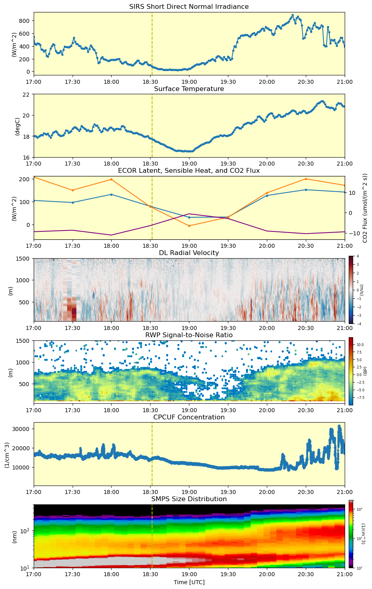

All Posts
Exploration of data from the 2024 eclipse at SGP
- 15 April 2024
The 2024 solar eclipse was an exciting event that saw roughly 90% coverage at ARM’s SGP observatory. The large array of instrumentation at the site provides a unique view into the atmospheric impacts of the eclipse. This notebook gathers a few of the instruments together for a close look at the data during the event.
If you have not used the ARM Live webservice before, please take a moment to check it out and login (https://adc.arm.gov/armlive/). Please insert your own username and token after you log in below.
Visualize and compare data from the SAIL campaign and NOAA
- 07 October 2022
When reading and analyzing data, its is useful to bring together data from different organizations. This not only expands the data available for scientists and their research, but is also useful for quality controls checks. In this notebook, we look at both the datasets produce by ARM instruments in the SAIL campaign as well as instruments provided by NOAA at their KPS site near the SAIL campaign location.
By comparing these datasets, we can see similar and differences between the two datasets, but overall the structure is comparable. We can see the usefulness of ACT to not only read ARM datasets, but datasets outside of ARM. These workflows allow for scientists to have many different tools to use different datasets for their research, as well as quality control checks which increases the confidence in the quality and calibration of the instrumentation.

New Docs
- 01 April 2022
Hello All!
Welcome to our new documentation page! This is a new section within the docs meant for: